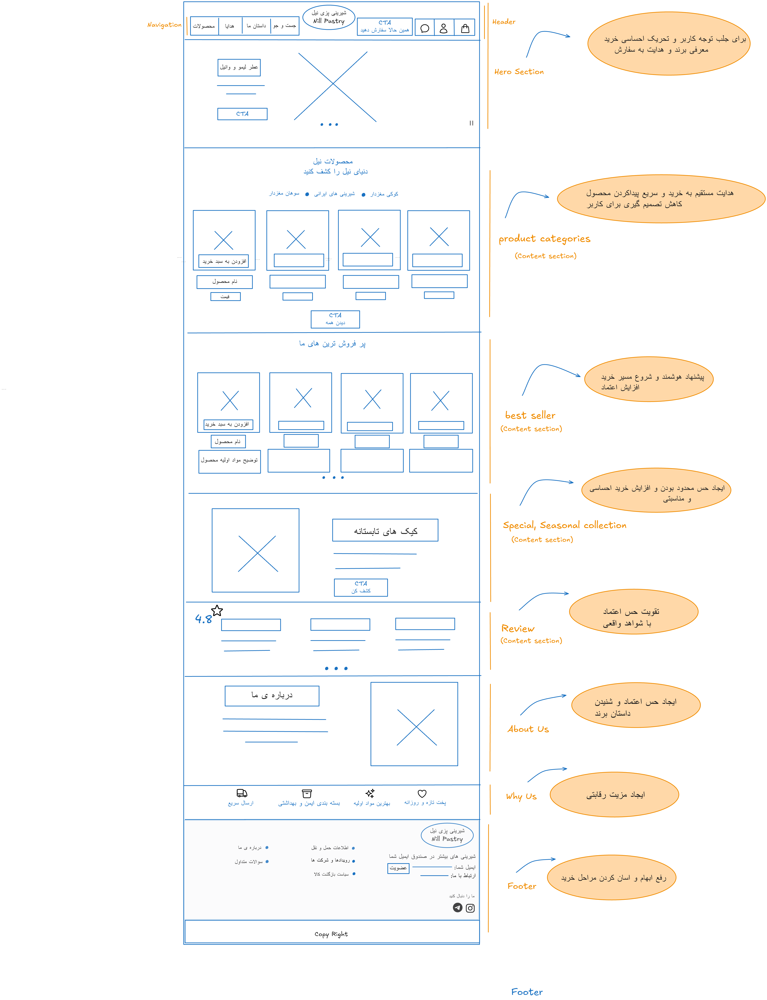

افزایش حس اعتماد در تجربه خرید آنلاین با نشانههای واقعی و انسانی.
کیساستادی UX/UI · پروژه شخصی
شیرینیپزی نیل — از سفارش پراکنده به مسیر شفاف خرید
چگونه با ۵ مصاحبه رفتارمحور، اعتماد، شفافیت قیمت/ارسال و کنترل بعد از پرداخت را به ساختار یک فروشگاه آنلاین شیرینی خانگی ترجمه کردم.
نقش
طراح UX/UI
نوع
پروژه شخصی · برند خانوادگی
بازه
اسفند ۱۴۰۴ – تیر ۱۴۰۵
خروجی
Research → Wireframe → UI

۱. Overview
نیل (Nill Pastry) یک شیرینیپزی خانگی در کرج است که حدود سه ماه پیش توسط دو خواهر راهاندازی شده؛ محصولات، شیرینیهای خاطرهانگیز و بااصالت ایرانیاند. ارزشهای برند حول کیفیت، دقت، اعتماد، زیبایی، خلاقیت و هویت ایرانی شکل گرفته است.
فروش فعلاً فقط از اینستاگرام و تلگرام انجام میشود. صاحبان کسبوکار با سه چالش واقعی روبهرو بودند: اعتماد پایین به پیج، ابهام قیمت و زمان ارسال، و دغدغهٔ ارسال بینشهری کرج به تهران. من این پروژه را بهعنوان پروژه شخصی و مسیر کامل UX تا UI پیش بردم — با همکاری خواهرم در سمت کسبوکار — تا آموختههایم را روی یک مسئلهٔ واقعی بیازمایم و تجربهٔ خرید را شفافتر و قابلاعتمادتر کنم.
یکخطی مسئله
کاربر نمیتواند کیفیت را لمس کند، قیمت و ارسال را شفاف نمیبیند، و
بعد از پرداخت کنترل روی سفارش ندارد — در نتیجه قبل از خرید یا بعد از
پرداخت، اعتماد میشکند.
۲. Problem Framing — آنچه میدانستیم
قبل از تحقیق، واقعیتها و مشاهدات صاحبان کسبوکار را جدا از فرضیات ثبت کردم تا مسئله مبهم نماند.
What we know
- کسبوکار در کرج است و به کرج و تهران خدمات میدهد؛ ارسال بینشهری دغدغه اصلی است.
- سفارشها فقط از اینستاگرام و تلگرام انجام میشود.
- اعتماد به پیج پایین است و مشتری اغلب قبل از خرید منصرف میشود.
- قیمت و زمان ارسال در یک مسیر مشخص دیده نمیشود.
- سایت رسمی برای سفارشگیری سریعتر و تجربه شفاف وجود ندارد.
۳. Assumptions — فرضیات نیازمند تحقیق
اینها فرضهای UX بودند؛ هدف تحقیق تأیید، رد یا عمیقتر کردنشان بود — نه اثبات از پیش.
What we assume
- اینستاگرامیبودن برند بهتنهایی اعتماد کافی نمیسازد.
- نگرانی از ارسال (تأخیر، کیفیت، سالم رسیدن) روی خرید اثر میگذارد.
- نبود مسیر سفارش مشخص باعث سردرگمی میشود.
- کاربران برای خرید قابلاعتمادتر، مسیر رسمیتر از دایرکت میخواهند.
۴. اهداف UX
کاهش نگرانی و ابهام در زمان، هزینه و وضعیت ارسال.
سادهسازی و شفافسازی گامهای سفارش از کشف تا تحویل.
شاخصهای جهتدار (پس از لانچ)
- کاهش انصراف در مرحلهٔ اعتماد / دایرکت قبل از ثبت سفارش
- افزایش وضوح قیمت و زمان تحویل پیش از خرید
- کاهش اضطراب پس از پرداخت با پیگیری وضعیت سفارش
۵. Research Plan
برای عبور از حدس به شواهد، ۵ مصاحبه رفتارمحور انجام شد. سؤالها برای فهم رفتار بودند، نه نظرخواهی سطحی؛ از دل مسئله، فرضیات و گونههای کاربری استخراج شدند.
انواع کاربر (فرضی — پیش از تحلیل)
- مناسبتی — تولد، مهمانی، نوروز؛ ظاهر، کیفیت و رسیدن بهموقع مهم است.
- هدیه — بستهبندی شیک و خاص اولویت دارد.
- احساسی — حس نوستالژیک و داستان برند ارزش دارد.
- اینستاگرامی — از کنجکاوی رسیده؛ دغدغه اصلی اعتماد است.
نمونه سؤالهای کلیدی
اعتماد
- وقتی وارد یک پیج میشوی چه چیزهایی را بررسی میکنی؟
- چه چیزی باعث میشود برند را قابلاعتماد بدانی؟
- آخرین باری که از خرید آنلاین شیرینی منصرف شدی، دلیلش چه بود؟
تصمیم و تجربه
- اولین قدم وقتی میخواهی شیرینی سفارش بدهی چیست؟
- کدام مرحله سفارشگیری سخت یا گیجکننده است؟
- ترجیح میدهی سفارش از کدام پلتفرم باشد؟ چرا؟
ارسال و ریسک
- در ارسال شیرینی چه چیزی برایت مهم است؟
- اگر سفارش از شهر دیگری باشد چه نگرانیهایی داری؟
- هزینه ارسال تا کجا روی تصمیم اثر میگذارد؟
انگیزه و پس از خرید
- بیشتر برای چه موقعیتهایی شیرینی سفارش میدهی؟
- بعد از خرید چه چیزی برایت مهم است؟
- اگر محصول آسیب ببیند از برند چه انتظاری داری؟
۵ مصاحبه واقعی
تحلیل الگوها
۲ پرسونای نهایی
بررسی کامنت اینستاگرام (اختیاری)
۶. Research Findings — الگوهای تکرارشونده
مصاحبهها در چهار خوشه دستهبندی شدند. این الگوها فرضیات را تأیید و با جزئیات قابلاقدام عمیق کردند.
Trust Formation
- بصری: عکس واقعی و باکیفیت معیار اعتماد است؛ عکس AI بیاعتمادی میآورد.
- فرآیند: پشتصحنه و پست/استوری مداوم = حس زندهبودن کسبوکار.
- انسانی: چهره صاحبان + داستان برند هویت میسازد.
- اجتماعی: معرفی دوست و دنبالکننده مشترک قویترین سیگنال اولیه است.
- ارتباطی: پاسخ کامل و محترمانه در دایرکت = حرفهایبودن.
Risk & Delivery
- حد تحمل پاسخ دایرکت حدود ۴۰ دقیقه؛ تأخیر = حس پشتیبانی ضعیف.
- نبود قیمت و زمان تحویل = ریسک تصمیم و انصراف.
- نگرانی از سالم و بهداشتی رسیدن محصول بالاست.
- آستانه حساسیت هزینه ارسال حدود ۲۰۰٬۰۰۰ تومان (در خرید شخصی پررنگتر از هدیه).
- سکوت بعد از پرداخت اضطراب و حس از دست رفتن کنترل میسازد.
Emotion
- شیرینی بخشی از مناسبت/هدیه است؛ نحوه ارائه به اندازه محصول مهم است.
- حس خانگی و کیفیت مواد اولیه ارزش احساسی خرید را بالا میبرد.
- بستهبندی شیک بیشتر در موقعیت هدیه اهمیت دارد.
Post-purchase
- تحویل مطابق انتظار (زمان + کیفیت) → خرید مجدد.
- اگر محصول آسیب ببیند، انتظار جبران از برند وجود دارد.
- اعتماد بعد از پرداخت تمام نمیشود؛ پیگیری و واکنش برند تعیینکننده است.
۷. Insight — ۱۰ یافته تصمیمساز
این Insightها پایه HMW، ایدههای MVP و ساختار وایرفریم شدند.
چون کیفیت لمسشدنی نیست، کاربر به واقعیبودن، هویت انسانی، پشتصحنه و داستان برند تکیه میکند.
پست و استوری مداوم، حس زندهبودن کسبوکار را میسازد و توجه و اعتماد اولیه را بالا میبرد.
کیفیت پاسخ دایرکت، اولین نقطه ارزیابی حرفهایبودن برند در غیاب ارتباط حضوری است.
بخش بزرگی از اضطراب از نداشتن دید و کنترل روی فرآیند سفارش میآید.
پاسخ دیرتر از حدود ۴۰ دقیقه، حس پشتیبانی ضعیف در آینده میسازد.
نبود قیمت فقط کمبود اطلاعات نیست؛ از دید کاربر پنهانکاری و افزایش ریسک است.
شیرینی اغلب بخشی از مناسبت یا هدیه است؛ ارائه محصول به اندازه خود محصول اهمیت دارد.
کاربران بهدنبال حس خانگی و نوستالژیاند؛ برندهایی که این حس را منتقل کنند ارتباط عمیقتری میسازند.
هزینه جداگانه سنجیده نمیشود؛ ارزش کلی تجربه (کیفیت + ظاهر + هزینه) معیار خرید است.
اعتماد بعد از پرداخت ادامه دارد؛ پیگیری، تحویل و جبران مشکل تعیین میکند خرید مجدد رخ بدهد یا نه.
۸. Persona
از چهار نوع کاربر اولیه، دو پرسونای تصمیمساز نهایی استخراج شد که تنش اصلی تجربه را نمایندگی میکنند: اعتماد و کنترل.
پرسونا ۱ — خریدار اعتمادمحور
انگیزه اصلیچون کیفیت را قبل از خرید لمس نمیکند، به نشانههای واقعیبودن برند برای کاهش ریسک نیاز دارد.
هدفخریدی مطمئن از جهت واقعیبودن و کیفیت بالا
رفتار- بررسی واقعیبودن و کیفیت عکسها
- دیدن پشتصحنه و کارگاه
- بررسی هویت انسانی برند
- توجه به Social Proof و پاسخ کامل دایرکت
تصاویر غیرواقعی / AI و نبود چهره انسانی برند
نقش در تصمیماگر اعتماد شکل نگیرد، خرید متوقف میشود.
پرسونا ۲ — خریدار محتاط
انگیزه اصلیچون خرید آنلاین غیرقابلپیشبینی است، بهدنبال کنترل و شفافیت حداکثری است.
هدفاطمینان از زمان تحویل، وضعیت سفارش و کاهش استرس بعد از پرداخت
رفتار- جستوجوی قیمت در پستها
- بررسی زمان تحویل و بستهبندی
- حساسیت به سرعت پاسخگویی
سکوت بعد از پرداخت، ندانستن وضعیت سفارش، پاسخ دیرتر از حدود ۴۰ دقیقه
نقش در تصمیماگر فرآیند قابلپیشبینی نباشد، منصرف میشود.
۹. User Journey Map (As-Is)
مسیر فعلی خرید از اینستاگرام — از کشف تا تحویل — با نقاط درد و فرصت طراحی.
۱. Discovery
کنجکاوی · امید⚠️ محتوای نامنظم → خروج سریع؛ اولین تأثیر حیاتی است.
✦ فرصت: Behind the Scenes + چهره واقعی + Social Proof
۲. Trust
تردید⚠️ عکس غیرواقعی، نبود قیمت، نبود Social Proof و هویت انسانی سرد.
✦ فرصت: هایلایت مشتریان + قیمت شفاف + پشتصحنه واقعی
۳. Decision
گیجی احتمالی⚠️ دایرکت زمانبر؛ تأخیر بیش از حدود ۴۰ دقیقه → انصراف.
✦ فرصت: مراحل واضح سفارش + تاریخ دقیق تحویل
۴. Post-purchase
اضطراب⚠️ سکوت بعد از پرداخت و از دست رفتن حس کنترل.
✦ فرصت: Order Tracking + پیشنمایش بستهبندی قبل از ارسال
۵. Delivery & Emotion
رضایت یا ناامیدی⚠️ تأخیر یا آسیب محصول میتواند به خروج دائمی منجر شود.
✦ فرصت: ضمانت تحویل + تجربه احساسی دریافت (آینده)
۱۰. User Flow فعلی
مسیر خرید فعلی کاملاً متکی به دایرکت اینستاگرام است:
- ۱ورود به پیج
- ۲دیدن پست / استوری محصول
- ۳بررسی اعتماد (عکس، پشتصحنه، نظرات)
- ۴تصمیم به خرید
- ۵پیام در دایرکت
- ۶دریافت قیمت + زمان تحویل
- ۷ثبت سفارش
- ۸دریافت پیام تأیید
- ۹انتظار + پیگیری وضعیت
- ۱۰دریافت محصول و تجربه نهایی
فرصت طراحی
وبسایت باید همین نقاط اصطکاک را کم کند: قیمت از ابتدا پیدا باشد،
مراحل سفارش واضح باشد، و بعد از پرداخت کاربر در تاریکی نماند.
۱۱. HMW و Ideation
سؤالهای How Might We پل بین Insight و راهحل بودند. ایدهها به MVP (قابلاجرا همین حالا) و آینده تقسیم شدند.
چطور نشانههای واقعیبودن برند را در نقاط تصمیمگیری واضح کنیم؟
چطور قبل از خرید، اطمینان کاربر به واقعیبودن برند را بالا ببریم؟
چطور عدمقطعیت خرید را در هر مرحله از مسیر کاربر کاهش دهیم؟
چطور دریافت محصول را به تجربهای احساسی و مناسبتی تبدیل کنیم؟
Trust
- عکس / استوری رضایت مشتری + هایلایت نظرات MVP
- ویدیو پشتصحنه پخت و بستهبندی ایمن MVP
- نمایش چهره واقعی صاحبان کسبوکار MVP
- نمایش مراحل: سفارش → آمادهسازی → ارسال → تحویل MVP
- نشان ارسال موفق کرج به تهران آینده
Risk
- پیگیری ساده سفارش (دایرکت / بات تلگرام) MVP
- تاریخ دقیق تحویل بهجای بازه مبهم MVP
- عکس بستهبندی نهایی قبل از ارسال MVP
- ضمانت تأخیر / آسیب (تخفیف یا ارسال مجدد) MVP
Emotion
- تقویت داستان برند و حس خانگی در محتوا MVP
- حالت پیشنمایش هدیه + کارت پیام آینده
۱۲. Design — وایرفریم و UI
ساختار صفحه اصلی طوری چیده شد که از لحظه ورود، اعتماد و شفافیت را بسازد — نه فقط کاتالوگ محصول. هر بخش به Insight مشخص وصل است.
تصمیمهای طراحی ← Insight
- Hero + داستان برند ← Insight ۱ و ۸ (هویت انسانی و حس خانگی)
- قیمت و گامهای سفارش روی صفحه ← Insight ۶ و ۴ (شفافیت و کنترل)
- نظرات و Social Proof ← Insight ۱ و ۲ (اعتماد اولیه)
- درباره ما / پشتصحنه ← Insight ۱ و ۳ (واقعیبودن و انسان)
- کالکشن مناسبتی / هدیه ← Insight ۷ (انگیزه احساسی)
- وضعیت ارسال و پیگیری ← Insight ۴، ۵ و ۱۰ (اضطراب بعد از پرداخت)
ساختار Homepage
- Hero — معرفی برند و وعده تجربه (اصالت + اعتماد)
- دستهبندی و پرفروشها — کاهش سردرگمی انتخاب
- کالکشن ویژه — پشتیبانی از انگیزه مناسبتی / هدیه
- نظرات — Social Proof برای پرسونای اعتمادمحور
- درباره ما و چرا ما — هویت انسانی و پشتصحنه
- Footer — دسترسی سریع به سفارش، ارسال و تماس
۱۳. Outcome و Reflection
تا این مرحله، مسئله کسبوکار به یافتههای قابلاستناد کاربر وصل شده و مسیر از تحقیق تا وایرفریم و UI نهایی در Figma شفاف است. لانچ و متریک واقعی هنوز انجام نشده؛ بنابراین نتیجه را صادقانه در سطح آمادگی طراحی گزارش میکنم، نه اعداد ساختگی.
چه چیز تحویل شد
- ۵ مصاحبه + تحلیل الگو در Trust / Risk / Emotion / Post-purchase
- ۱۰ Insight تصمیمساز و ۲ پرسونا
- Journey Map و User Flow وضعیت فعلی
- HMW + ایدههای MVP / Future
- وایرفریم Homepage با annotation
- UI نهایی در Figma
آموختهها
- جدا کردن «آنچه میدانیم» از «فرض» از همان اول، تحقیق را دقیقتر کرد.
- قیمت پنهان برای کاربر = ریسک، نه جزئیات کمکی.
- اعتماد بعد از پرداخت تمام نمیشود؛ پیگیری بخشی از تجربه است.
- گام بعدی ضروری: پروتوتایپ تعاملی و تست کاربردپذیری قبل از توسعه.
تحقیق و Insight
پرسونا و Journey
HMW و MVP
وایرفریم
UI در Figma
پروتوتایپ و تست
مایلید درباره این پروژه صحبت کنیم؟
آماده ارائه جزئیات تحقیق، تصمیمهای طراحی و مسیر بعدی هستم.